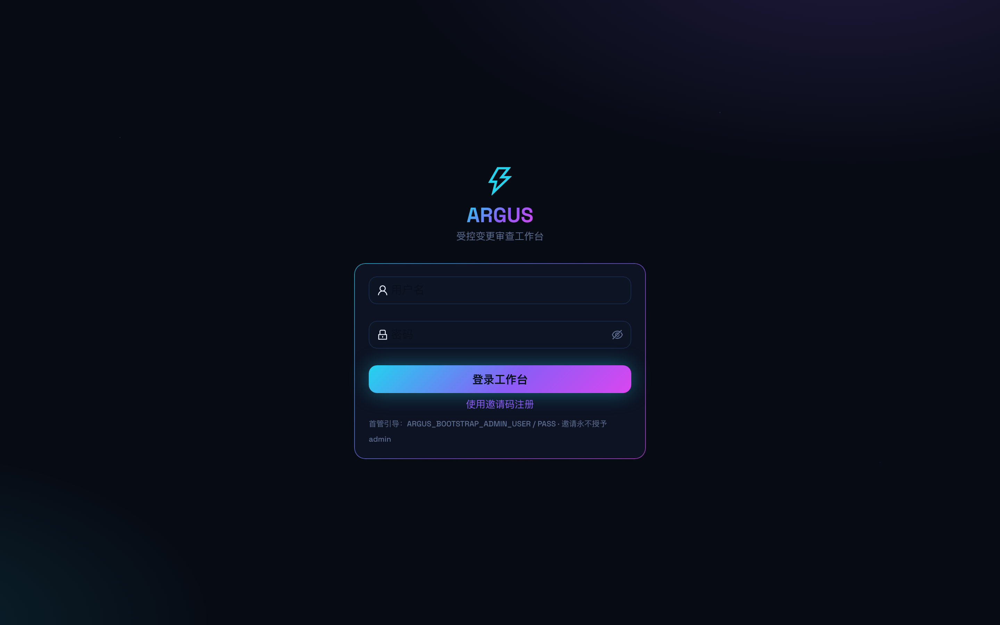
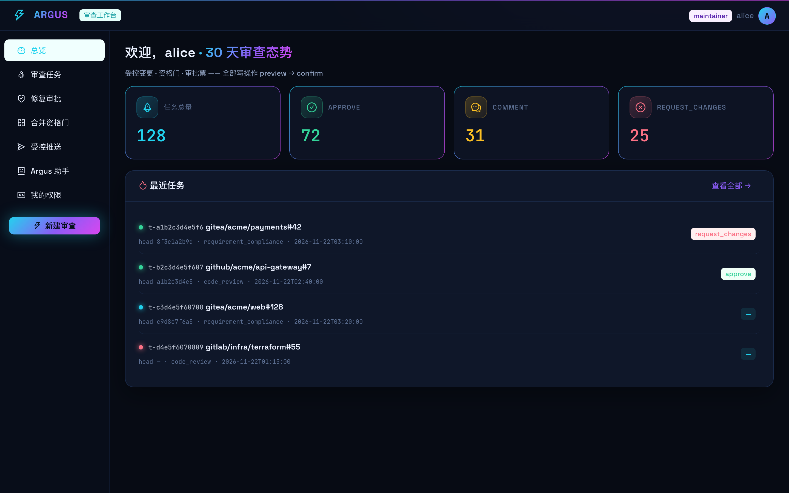
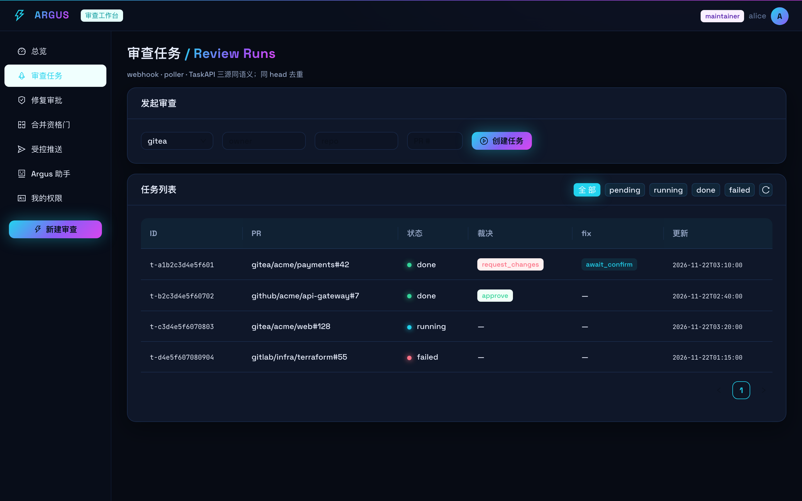
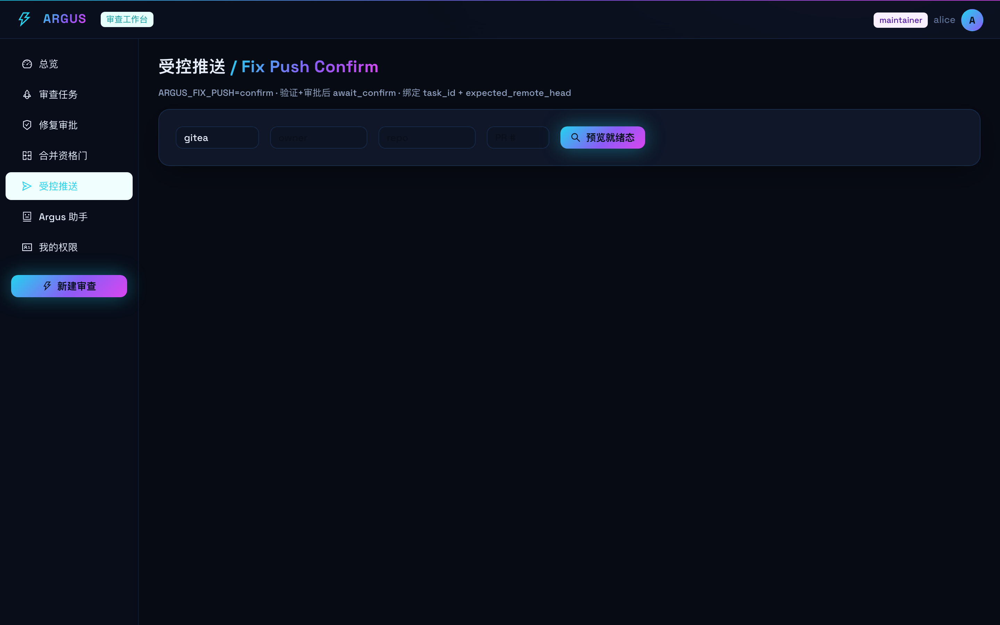
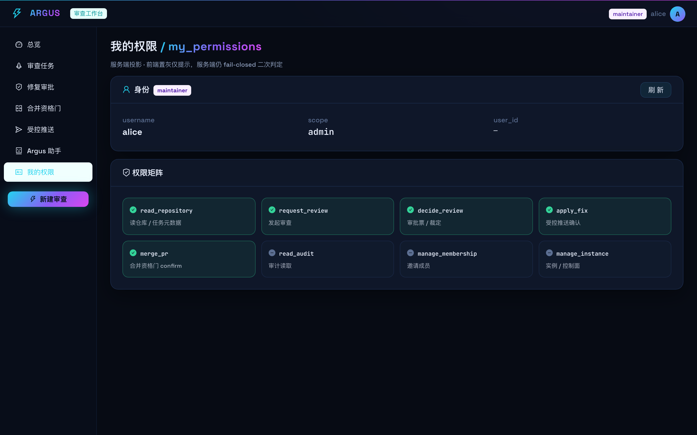
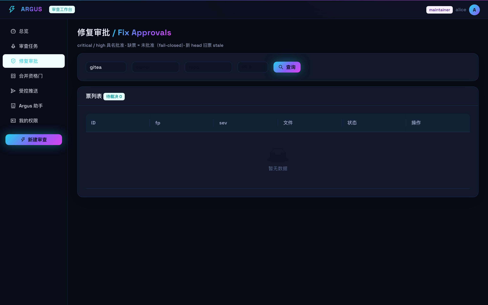
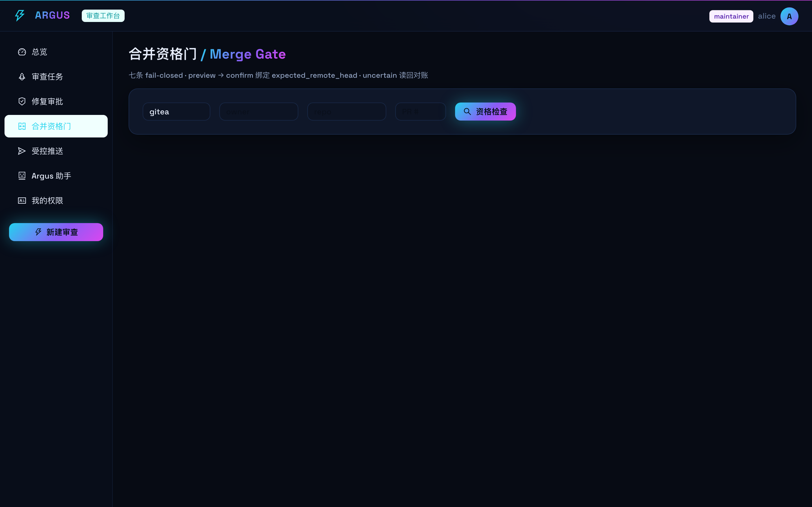

审查 工作台
TypeScript + Ant Design 6 + Ant Design X · 深空科技风 · 所有写操作 preview → confirm
📊
总览态势
30 天裁决分布统计卡 + 最近任务流。
🚀
审查任务
发起审查、任务表、报告查看；同 head 去重。
🔐
修复审批
审批票批准 / 拒绝（CAS），fp 短码 + 严重度。
🚧
合并资格门
七条 gate 行 + preview → confirm 向导。
📤
受控推送
await_confirm 就绪态 + 绑定 head 确认。
🤖
Argus 助手
Ant Design X 问答，接真 Q&A API。
界面 实拍
深空底 + 玻璃拟态 + 渐变描边统计卡 + 状态光点（含 running 呼吸动画）








真实 E2E 实测
真二进制起服（argus-service :8899）+ 真实登录会话 · Playwright 抓拍 · 权限物理分离实证




API 实测矩阵（10 项）
| 用例 | 预期 | 实测 |
|---|---|---|
| 静态 token /auth/me | 部署超管两面全开 | ✅ |
| 会话 admin 权限投影 | decide=false, manage=true | ✅ |
| 会话 maintainer 权限投影 | decide=true, manage=false | ✅ |
| alice 邀请（maintainer） | 403 | ✅ |
| admin 合并资格（session） | 403（无裁定权） | ✅ |
| read token 建任务 | 403 | ✅ |
| 无 token 访问 | 401 | ✅ |
| POST /ask（未配 LLM） | ok=false 如实 | ✅ |
| 邀请授 admin 角色 | 400 拒绝 | ✅ |
| bootstrap admin 冷启动 | 首管可登录 | ✅ |
技术栈
TypeScript 5.9
React 19
Ant Design 6
@ant-design/x
Vite 7
React Router 7
Space Grotesk + JetBrains Mono
启动
git clone https://github.com/yi-nology/argus-frontend.git
cd argus-frontend && npm install && npm run dev
# http://127.0.0.1:5177 · /api 代理到 argus-service :8899